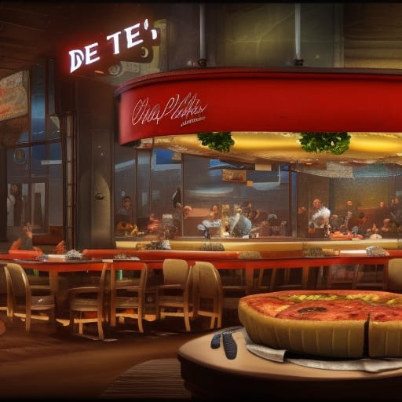

Deep Dish

Chicago deep dish pizza in a chicago style pizza joint. Source: NightCafe
Chicago deep dish pizza is an iconic culinary delight that originated in the Windy City. This style of pizza is known for its deep, thick crust that forms a sturdy base to hold in all the delicious toppings. The crust is typically made from a buttery, flaky dough that is layered with cheese and toppings before being smothered in a rich tomato sauce. The deep dish pizza is baked in a round, deep-dish pan, resulting in a pizza that is more like a savory pie than a traditional flatbread. The combination of the thick crust, gooey cheese, and hearty toppings creates a pizza experience that is both indulgent and satisfying. Chicago deep dish pizza is a must-try for pizza lovers and has become an emblem of the city's vibrant food culture.
What sets Chicago deep dish pizza apart is the unique way it's assembled. Unlike traditional thin-crust pizzas, the toppings of a deep dish pizza are layered in reverse order. The crust is laid down first, followed by a generous layer of cheese, which helps to prevent the crust from becoming soggy. Then comes the toppings, which can include a variety of ingredients such as sausage, pepperoni, onions, and bell peppers. Finally, a thick layer of chunky tomato sauce is spread on top, adding a burst of flavor to every bite. The pizza is then baked slowly to allow the crust to rise and the cheese to melt into a golden, bubbly perfection. The result is a pizza experience like no other, with a satisfying combination of textures and flavors that will leave you craving for more.
Ingredients
Crust:
- 3 cups all-purpose flour
- 1/4 cup yellow cornmeal
- 1 tablespoon granulated sugar
- 2 1/4 teaspoons active dry yeast
- 1 1/2 teaspoons salt
- 1/4 cup unsalted butter, melted
- 1 cup warm water
Filling:
- 1 pound mozzarella cheese, shredded
- 1 pound Italian sausage, cooked and crumbled
- 1 cup sliced bell peppers
- 1 cup sliced onions
- 2 cups chunky tomato sauce
- 1 teaspoon dried oregano
- 1/2 teaspoon garlic powder
- Olive oil for drizzling
Steps
-
In a large mixing bowl, combine flour, cornmeal, sugar, yeast, and salt. Make a well in the center and pour in melted butter and warm water. Mix until a dough forms.
-
Transfer the dough to a floured surface and knead for about 5 minutes until smooth and elastic. Place the dough in a greased bowl, cover it with a clean kitchen towel, and let it rise for about 1 hour or until doubled in size.
-
Preheat your oven to 425°F (220°C). Grease a 9-inch deep-dish pan with olive oil.
-
Punch down the risen dough and transfer it to the greased pan. Press the dough evenly across the bottom and up the sides of the pan, creating a thick crust.
-
Layer half of the shredded mozzarella cheese over the crust. Add the cooked Italian sausage, bell peppers, onions, and pepperoni (if desired) on top of the cheese.
-
Pour the chunky tomato sauce over the toppings, spreading it evenly. Sprinkle dried oregano and garlic powder on top.
-
Add the remaining shredded mozzarella cheese on top of the sauce.
-
Place the pizza in the preheated oven and bake for about 25-30 minutes, or until the crust is golden brown and the cheese is bubbly and slightly browned.
-
Remove the pizza from the oven and let it cool for a few minutes before slicing and serving.